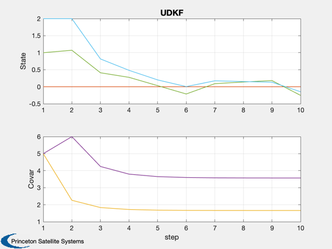
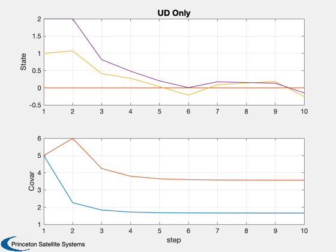
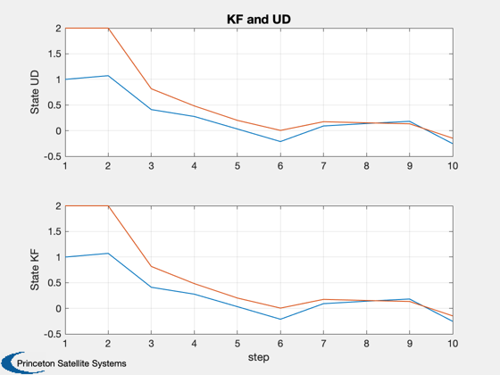

Demonstrate the Kalman Filter using UD factorization.
Since version 9.
------------------------------------------------------------------------
See also UDKalmanFilter., C2DZOH, KFilter, Plot2D
------------------------------------------------------------------------
Contents
Double integrator plant
a = [0 1;0 0];
b = [0;1];
Measuring position
h = [1 0];
Time step
dT = 0.5;
Discretize
[phi,gam] = C2DZOH(a,b,dT);
p = 5*eye(2);
z1Sigma = 0.1;
r = z1Sigma^2;
q = eye(2);
xEst = [1;2];
Create the UD form
d = UDKalmanFilter( 'p to ud', p );
d = UDKalmanFilter( 'add q', d, q );
d = UDKalmanFilter( 'add g', d, eye(2));
d = UDKalmanFilter( 'add phi', d, phi );
d = UDKalmanFilter( 'add r', d, r );
d = UDKalmanFilter( 'add x', d, xEst );
d = UDKalmanFilter( 'add h', d, h );
Initialize the simulation
x = [0;0];
nSim = 10;
xPlot = zeros(10,nSim);
for j = 1:nSim
xPlot(:,j) = [x;xEst;d.x;diag(p);diag(UDKalmanFilter('compute p',d))];
z = h*x + z1Sigma*randn;
[xEst, p, k] = KFilter( r, phi, q, h, xEst, z, p );
d = UDKalmanFilter( 'incorporate measurement', d, z );
d = UDKalmanFilter( 'propagate', d );
x = phi*x;
end
Plot2D( 1:nSim, xPlot, 'step',['State';'Covar'],'UDKF','lin',['1:6 ';'7:10'])
Plot2D( 1:nSim, xPlot([1 2 5 6 9 10],:), 'step',['State';'Covar'],'UD Only','lin',['1:4';'5:6'])
Plot2D( 1:nSim, xPlot([3 4 5 6],:), 'step',['State UD';'State KF'],'KF and UD','lin',['1:2';'3:4'])
  